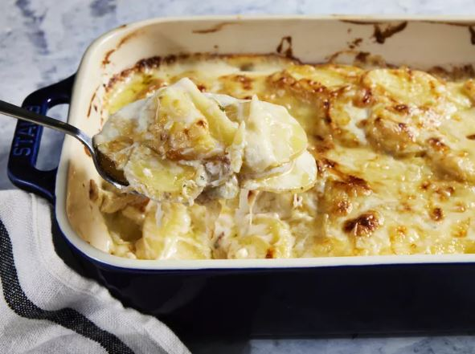

Dauphinoise Potatoes

Description
These Dauphinoise potatoes are luscious and creamy. The potatoes will be
perfectly seasoned after absorbing all the flavor in the sauce, and come out super tender.
Ingredients
- 2 tablespoons unsalted butter
- 1 tablespoon minced garlic
- 1 tablespoon all-purpose flour
- 1 ½ cups heavy cream
- 1 cup whole milk
- 1 ½ teaspoons kosher salt
- 2 pounds Yukon Gold potatoes, scrubbed
and sliced 1/8-inch thick with peel
- ½ teaspoon chopped fresh thyme, plus
more for garnish
- ⅛ teaspoon ground black pepper
- 2 large tomatoes, chopped
- 1 tablespoon lemon juice
- cooking spray
- 4 ounces Gruyere cheese, shredded
Steps
- Preheat oven to 375 degrees F (190 degrees C). Grease a 2-quart baking dish.
- Bring a large pot of lightly salted water to a boil.
Add penne and cook, stirring occasionally, until tender yet firm to the bite, about 11 minutes.
Drain and set aside until needed.
- Layer 1/2 of the potatoes in the prepared baking dish; sprinkle 1/2 cup cheese
evenly over potatoes. Top with remaining potatoes and spoon remaining liquid
left in the pot over the potatoes. Top with remaining 1/2 cup cheese.
- Melt remaining 2 tablespoons butter in the skillet over medium heat.
Whisk in flour until fully combined and starting to turn golden, 30 seconds to 1 minute.
Whisk in chicken broth until combined, then repeat with milk.
Stir in tomatoes, lemon juice, salt, and pepper; bring to a simmer.
- Bake in preheated oven until sauce is thickened, top is browned in spots, and
potatoes are tender, 40 to 45 minutes. Let stand 15 minutes before serving;
garnish with additional thyme.
- Bake in the preheated oven until golden on top and bubbling around the edges, 8 to 10 minutes.
Previous recipe
Return to Top